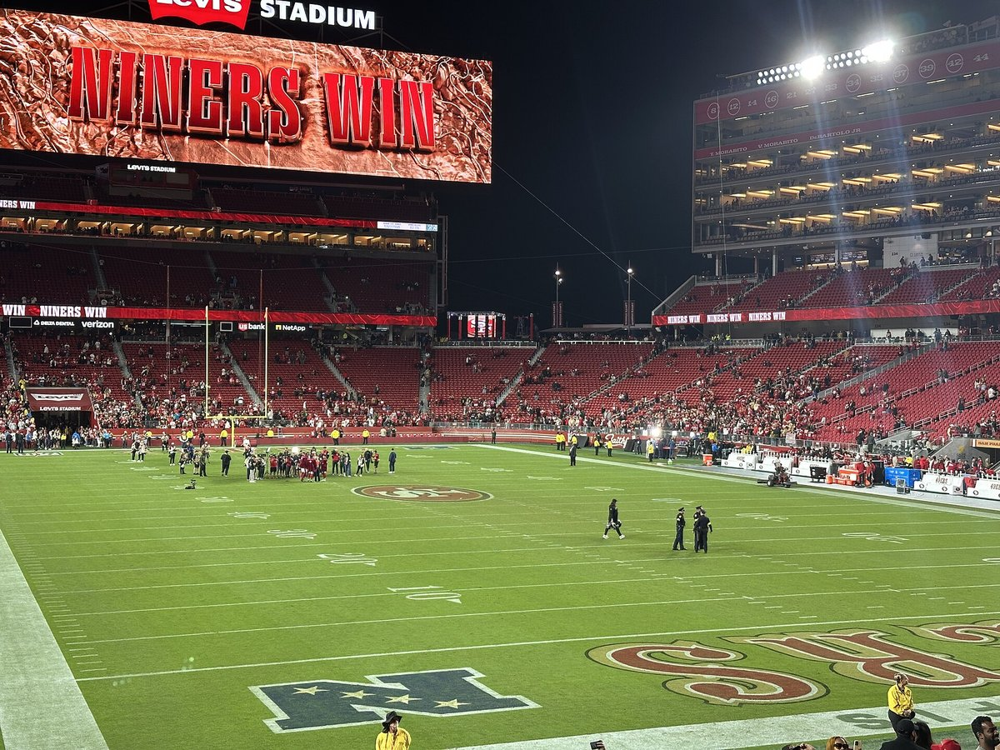

John Lynch Can Miss in the First Round. He's Great at Everything Else.
The guys who chased Bo Nix all over Levi's on Sunday came from a sixth round pick swap, a third round trade, a draft night trade down and the practice squad. I've yelled at John Lynch for years. Today he gets his due.

I'll admit something up front. I've spent a good chunk of the last nine years yelling at John Lynch. At the TV, in the car, in the group chat, at anybody who made the mistake of asking me how I felt about Trey Lance. I've got a whole speech about the first round and I've given it more times than I'd like to admit.
So it's a little uncomfortable for me to sit here the day after Denver and say this. But I watched the pass rush on Sunday, I went back and looked at who was actually getting after Bo Nix, and I can't get around it.
Lynch built that. Piece by piece, mostly with guys you'd never heard of.
Look at who was in Nix's face
We didn't sack Nix once on Sunday. I complained about it in my reaction last night and I stand by the complaint. But no sacks isn't the same as no pressure, and Nix was under it on 43.2 percent of his dropbacks. He went 25 of 42 for 214 yards, barely five a throw, and Denver scored 14 points. He spent the afternoon moving off his spot and checking it down, and you could see it wearing on him by the fourth quarter.
Now look at the names doing it.
Osa Odighizuwa had four pressures. Lynch got him from Dallas in March for a third round pick. Keion White had four more and one of the two hits on Nix all day. Lynch got him from New England last October, and the price was basically swapping a sixth round pick for White and a seventh. A sixth! For a former second rounder who had five sacks and 16 quarterback hits in 2024. I remember people barely noticing that trade. I barely noticed it.
Ogbo Okoronkwo had two pressures. He's 31, he won a ring with the Rams, and he was part of that signing spree in August that I'll be honest, I rolled my eyes at. Romello Height had two, and that kid broke his hand against Miami, had surgery, and was still out there Sunday. Gracen Halton had one.
And Sebastian Valdez had one pressure and the other hit on Nix. You know where Valdez came from? Undrafted out of Washington last year. Cut at final cuts. Practice squad. A futures deal in January. Pulled up from the practice squad before Arizona because the line was so beat up they needed bodies. He's 301 pounds of nobody expected anything, and he was in the backfield against Denver.
The Height and Halton trade is my favorite thing he did all year
Draft night, the Niners were sitting at 58 and Lynch traded down with Cleveland, sending 58 and 152 for 70 and 107. I remember groaning, because I always groan when we trade down. I want the guy. Just take the guy.
Well, 70 turned into Romello Height and 107 turned into Gracen Halton, and both of them were in Nix's face on Sunday as rookies. Two pass rushers for the price of one, on a line where Bosa's out with the calf, Alfred Collins is done for the year and Mykel Williams is still working his way back. If he takes one guy at 58, we're thinner right now than we already are. I hate when he's right about stuff like this.

Okay, the first round. I know.
I'm not going to pretend the first round's been good, because it hasn't, and anybody who's read this site for more than a week knows how I feel. Solomon Thomas at three. Javon Kinlaw. And Trey Lance, the one I'll be bitter about on my deathbed, where he gave up three first round picks to move up and take a quarterback who barely played for us. That one still makes my jaw tighten.
And this year he didn't even pick in the first round. Traded down with Miami, then traded out of the round altogether, and our first pick was De'Zhaun Stribling at 33. I've got opinions about that too.
But I've started to think I've been grading the guy on the wrong test. The first round is the part everybody watches, so it's the part everybody remembers. Everything else is where he's actually been good.
Everything else is a long list
George Kittle in the fifth round of his very first draft. Fred Warner in the third. Deebo in the second. Deommodore Lenoir in the fifth. Brock Purdy with the last pick of the whole 2022 draft, which, come on. You can't plan that, but you also have to be the guy who takes him.
Then the trades. Trent Williams. Christian McCaffrey. Now Odighizuwa and White for a third and a sixth. And the bottom of the roster stuff that nobody writes about, like bringing Dre Greenlaw home on a one year deal after Denver cut him, and he goes out and leads everybody with 12 tackles against Denver. Or poaching Khalid Kareem off Atlanta's practice squad the week before the opener when Okuayinonu went on IR.
Those moves don't get a draft night graphic. Nobody throws a party for a sixth round pick swap in October. But that's how you end up 4 and 0 with your best pass rusher in street clothes, and it's why a defense with this many injuries held a decent Denver offense to 14.
So, John. Credit where it's due. You got this one right, and a bunch of others too.
I'm still going to yell at you in April. You know I am.
If you missed it, here's my reaction to the Broncos win, and I made the case earlier today that this is the team to beat in the NFC. The whole defensive line injury mess is on the 49ers injury report, and the full roster lives on the 2026 49ers depth chart.
Seattle on Sunday. Somebody get to the quarterback this time.
More coverage: 49ers · NFL · Bay Area Sports Blog home